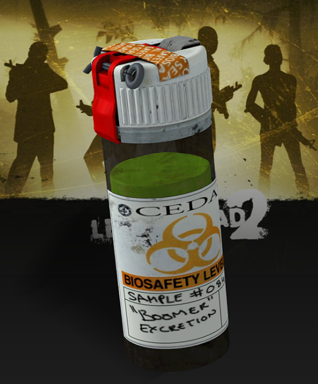
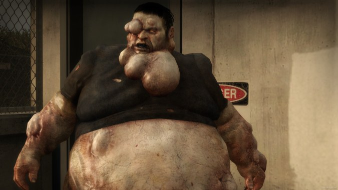

Este fue el primer infectado especial del cual la C.E.D.A. tuvo conocimiento. En la primera campaña del segundo juego, Dead Center, se pueden encontrar varios agentes de la C.E.D.A. infectados por el virus, lo importante de estos infectados es la bilis de Boomer que ellos portan cómo también este objeto puede ser encontrado a lo largo de cualquier campaña.
Los frascos que contienen bilis de Boomer cómo los Boomers de manera individual tienen la capacidad de atraer hordas de infectados.
De manera individual, el Boomer vomita sobre los sobrevivientes aturdiéndolos por unos instantes, estos segundos que los sobrevivientes están indefensos el olor del vomito de Boomer atrae a los infectados que en su mayoría ignoraran a los otros sobrevivientes atacando únicamente al que recibió el vómito de Boomer.
La bilis de Boomer es un liquido verde, aparentemente viscoso, que se encuentra dentro de frascos de contención de la C.E.D.A., la función que tiene este objeto es similar a la de una bomba casera o proyectil. Al ser lanzada a cualquier infectado u otro sobreviviente se le dará el efecto de vomito de Boomer desviando la atención de los infectados al que se encuentre bajo el efecto de este objeto. Particularmente este objeto es utilizado en situaciones donde los sobrevivientes son arrinconados por la horda final de infectados o cuando el Tank hace su aparición.

La apariencia del Boomer es la de un infectado robusto con varias protuberancias a lo largo de su cuerpo, sitios donde podría almacenarse la bilis.

La comunidad tiene cómo un dato casi asegurado que el origen del Boomer viene de alguien que sufría de sobrepeso debido a su apariencia física. Otros indican que el origen del Boomer vendría de una persona que tenía problemas gástricos antes de la gripe verde, esta teoría en particular ha sido refutada varias veces al ser esta una justificación que se intenta dar a la mutación de la cepa del virus en el infectado Spitter.